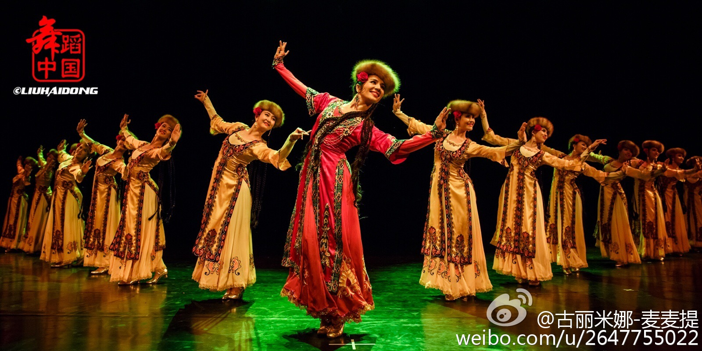

Dance is one part of human culture. Dance in China can be traced back to the 4,000 BC. Pottery shards from the time show people moving around with weapons in what appear to be choreographed dance routines, most likely for some sort of hunting rituals.
By the 3rd century BC, the Chinese court was already interested in dances and celebrated performances for entertainment. The Long Sleeve dance dates from this time. The dancers wore very long silk sleeves that covered their hands and further extended. The hanging part was used to make movements. We can still find this tradition today in some dances.
Chinese dance, with its vivid whirling ribbons, elaborate stylized movements, ethnically diverse costumes, and stories of China's past and its peoples, offers a tantalising glimpse into a complex and ancient culture.
During the Tang dynasty (7th - 10th century), dance was an established practice and there were royal schools responsible for training thousands of performers and musicians. This period is considered the peak of traditional Chinese dance. A huge diversity was created and dance was very common among members of the court. In the countryside, folk dance was also popular.

After the Tang dynasty, dance entered a period of decay, partly due to the practice of foot binding. This prevented girls' feet from growing and it very difficult for them to walk; dancing was almost impossible. Foot binding remained common until well into the 19th century.
Western dances arrived during the 19th century and gave origin to ballrooms. Before that, couple dancing was very rare. With the arrival of communism, dance became a form of political propaganda, often used to transmit communist ideas. Many traditional dances and most foreign art forms were banned during the Cultural Revolution (1966 - 1976) as part of a policy to eliminate all influences from capitalism.

Afterward, dance reemerged as a cherished cultural expression and has continued to develop. Today, traditional forms coexist with contemporary creations, which are often inspired by traditional elements as well. Chinese ballets, operas and performance dances have become very popular.
© Henin 于海宁 18011081